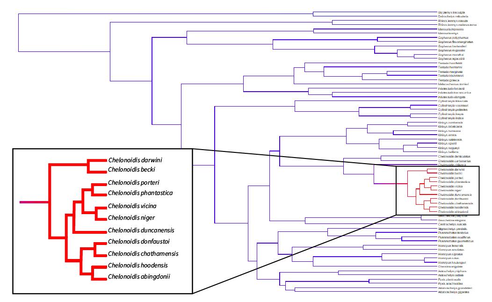

Diversification Rates Results
What does this phylogenetic tree signify?
This figure shows a phylogenetic tree of tortoise species. The colors represent the diversification rates of the species, with red indicating high diversification rates and blue indicating low diversification rates. The Galápagos tortoise species are highlighted in red, indicating their higher diversification rates compared to other tortoise species.
What does this table signify?
Here we present a table that includes data for tortoise species that live across the world. In our project, we focus on tortoise species that live on the Galápagos Islands. In this analysis, we used MiSSE (Missing State Speciation and Extinction) to estimate diversification rates for the tortoise species presented here. Tortoise species that live on the Galápagos Islands (a 1 in the "On_Galápagos" column) have much higher diversification rates (seen in the "Net_Diversification" column) compared to the other tortoise species in our dataset. To sort the data, click on the column names.
Column definitions:
- Species: various tortoise species around the world.
- On_Galápagos: whether the species lives on the Galápagos Islands (1) or not (0).
- Carapace_Length (cm): the average carapace length of the species in centimeters.
- Island_Size (km²): the area of the island where the species is found.
- Turnover: the turnover rate of the species (Speciation + Extinction).
- Net_Diversification: the net diversification rate of the species (Speciation - Extinction).
- Speciation: the speciation rate of the species.
- Extinction_Frac: Extinction fraction (Extinction/Speciation).
- Extinction: the extinction rate of the species.